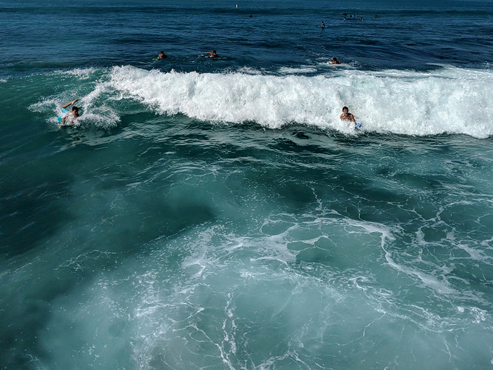

Catch the wave: Surfing and working in tech
April 28th, 2024
Bellevue, WA

I'm not particularly good at surfing, but it's been a bit of a dream of mine to catch waves, even if it's only a few times every couple of years. Just last October, we took a trip out to Hawai'i to celebrate our anniversary, and I booked a surf lesson while staying near Waikiki beach.
I had a 1:1 lesson with Ty Gurney surf school. During this lesson, I had a pretty interesting conversation with my instructor. I asked him, "What am I doing wrong?" His response was that "Most new surfers have the same bad habits of not anticipating where the wave is coming and where the surf will break. They just throw themselves into each and every wave." He showed me how he would look at the patterns depending on the tide, location, and even where the sandbanks are, which will change the patterns of where to catch the best waves. With a bit of help, and some really nice waves that day, I thoroughly enjoyed my 2-hour lesson that felt like 30 minutes. I caught some waves, washed up, and got some poke for lunch.

Most new surfers have the same bad habits of not anticipating where the wave is coming and where the surf will break. They just throw themselves into each and every wave.
― Brent, Surf Instructor
Fast forward many months later in 2024, while looking for a new job, I thought back to the conversation that I had with my surf instructor. I've been keeping tabs on the job market in early 2024, and the situation felt super rough. Many of my friends who were also looking for work found that it was a much different market than even back a few years in 2021. Quotes like "Senior is the new Junior" and 1000+ applicants for job entries were the norm now. What happened and what has changed? The voice in my head echoed like the surf "most job seekers have the same bad habits of not anticipating where the job markets are moving to, and what preemptive measures to take. They just throw themselves into the job market hoping for the best."
When I first started in 2014, it felt like product/UX design was still a developing concept. People were still trying to figure out how best to build and scale digital experiences online. It was a time of growth and massive potential for people to get into design. Fast forward 10 years, and the growth of UX as a career exploded as a no-code entry into a lucrative tech job. The number of product/UX designers grew as technology, education, and demand for these kinds of jobs got more and more people to dive into a design career.
Now, in the middle of 2024, that saturation in designers and technology moving forward has meant that the entry level of the UX design job market has considerably narrowed. I believe that the same kind of thing was also happening in the software developer space. Tons of available candidates of all skill levels, but less and less value being delivered when companies had tools that could generate or automate basic design and software. Nowadays, for a startup to get their business running, they could get a Squarespace website or Shopify ecommerce store in minutes.
What now? What can we do with this new environment in the tech industry? I'm not fully sure, but I believe that there must be ways that designers (and developers, pretty much anyone in tech) can figure out how to "catch some waves."

How to catch a wave
- Tide
- Location
- Sand banks
1. Tides
Tides are cyclical based on the pull of the Moon. There are low tides and high tides. Similarly, just like many economic patterns, job markets can also have waxing and waning phases. Something that I've read about in the last few months is how much the ripples of other economic patterns affect the job market. For example, when the interest rate was low in the early 2010s to 2020s, tech companies raised tons of money and were able to mass hire and grow. When the interest rate began to rise post-2020, cash got tight, and companies weren't as aggressively hiring and even began to lay workers off to balance the bottom line. Now there isn't much we can do individually about the rising interest rates, just as we have no control over the phase of the tides, but it helps to understand and plan when it'll be easier to get hired or when to think of other ways to adapt to the situation.
2. Location
When a surf spot gets too busy, many surfers will adjust their location, or move further outwards/inwards so that they can find their own space. Similarly, I've been thinking about how product designers can "move" around in the tech industry as well. They can niche deeper into a specific field ("I'm all about designing mobile application experiences on Android") or industry ("I worked across multiple companies in the health care space") or look for new ground that hybridizes their skills with other skills ("I'm a design engineer that creates design systems and prototypes production-ready front end"). The idea is to move to where there might be a lower supply of that type of designer and the value they can bring versus the demand for those skills. This does take some work and time, and not something we can just change at the drop of a hat, but preparation goes hand in hand with anticipation.
3. Sand Banks
It's pretty hard to see where the sandbanks are, sometimes they are just a few feet below the water's surface. Sandbanks can disrupt the flow of the tides coming in and cause waves to break early or push completely to another side around the bank. Similarly, there are hidden sandbanks in the tech industry as well. Keeping an eye out for what new tech disruptions are affecting UX design such as AI capable of generating design systems or opportunities such as the advance of AR/VR user experience design still being formed and hard to design for. One way that I'm looking for the tech sandbanks is to look at what's happening in the industry, what other designers are excited about, what they are worried about, and what is going to be big or just about to collapse. Easier said than done of course, I'm no soothsayer, but by doing research, finding the right industry leaders to follow, I hope to be able to "read" the potential disruptions and plan around them.

Preparation is the key
So yeah, it doesn't seem like these examples are that helpful in the midst of a job search, most of these points are all about pre-planning, preparing, and trying to anticipate change before it happens. But it's never too late to get started. During my surfing lesson, the instructor and I paddled out to a section just past 60 yards (60m-ish) from the beach. There were many other surfers there patiently waiting and anticipating the choice waves to show up. "The waves aren't gonna be good every day, it comes and goes," explained my instructor, "But it's always good to see everyone trying their best, it's never just about you. Sometimes the only thing you can control is being prepared when the big one comes up over the horizon. Are you in the best spot to catch it?"
Sometimes the only thing you can control is being prepared when the big one comes up over the horizon. Are you in the best spot to catch it?"
― Brent, Surf Instructor
He pushed me forward and yelled out for me to "paddle like hell," building up speed to meet the wave where it was about to break. The board surged forward as the water began to move fast around me, I pushed up on to my knees and began to stand up. The rush was exhilarating, but I knew that it would last but a minute. Surfing is about catching waves, but the ratio is really 99% getting into position, reading, anticipating, and getting the timing right just for that 50-second ride.